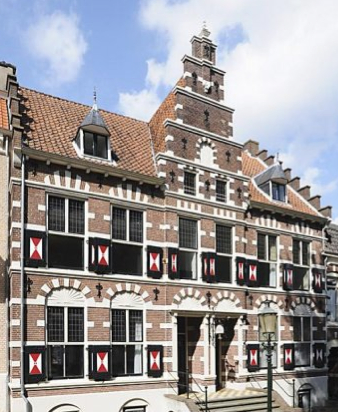

Hi, we're Beta Corp! We build and deliver custom web applications.
If you have a problem that needs to be solved with software, and you are looking for a long-term tech partner to help you solve it, then Beta Corp wants you as a client!
We also offer consultancy services for when you only require our expertise.
We work together with our clients. This means we build and deliver a minimum viable product (MVP) as early as we can. Then you start using the app and we continuously deliver updates.
Using the app while it is being created allows you to provide feedback, and possibly change directions, before a lot of time and money has been spent creating something you don't want or need.
Every day your app will become more awesome.
Because we deliver results early in the process, you and your team get a great feel for what we are building. It also means there is less risk of things going wrong, deadlines slipping or the project going over budget.
Others may call this process Lean or Agile, for us it is just common sense.
Beta Corp was founded to formalise the cooperation between five experienced freelance software developers, and to make it easier for our clients to work with us.
You deal with one company instead of an individual, so there is no longer the awkward "bus problem" to worry about.
Depending on your needs, wants and budget, we choose a team suited for the task.
We are always looking for talented people to work with us. We ask that you have a little or a lot of experience in one or more areas of the interwebs and that you do not mind being an independent contractor. If you require job security, this may not be for you. However, if you have never been your own boss, but it is something you have always dreamed about, we would love to help you get started!
Still interested? Click here to get in touch. Show us what you can do, and we will contact you.
Most clients do not care about how the problem gets solved, just that we solve it. Some clients are looking for specific technologies, but don't need a long explanation. Either way, this section can be brief.
We work together with a client instead of for a customer. We are your tech partner after all! When you ask for the impossible or, even worse, for something that will hurt your interests, we will refuse your request. Then we will explain why. Our interest is to make the project succeed, and sometimes that means it is time for real talk.
Is there a problem? If so what is the problem? Do you want to sell a product or service. What are possible solutions. Does that involve or require an app or a website? Do you need a combination of technologies? Is a website really necessary? Sometimes we can help you out by offering quick solutions in the form of existing services/tools. As much as we like to build things, it's a waste of time and money to reinvent the wheel.
By now you have a good idea of what we do and how we do it. The next step is for you to reach out, so we can start working together.

Beta
Corp
Stadsring 248-250
3811HS Amersfoort
info@betacorp.nl